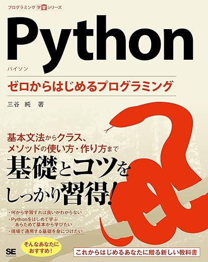

(補足資料) Python ゼロからはじめるプログラミング¶
書籍
書影 |
タイトル |
|---|---|
 |
目次
- 1. Pythonプログラミング
- 2. 第1章 Pythonに触れる
- 2.1. プログラムとは
- 2.2. さまざまなプログラミング言語
- 2.3. プログラムコードが実行されるまで
- 2.4. Pythonのプログラムコード
- 2.5. Pythonに触れてみる
- 2.6. 電卓のように
- 2.7. 文字列を扱う
- 2.8. print関数
- 2.9. プログラムコードのルール
- 2.10. エラー
- 2.11. 変数
- 2.12. 変数
- 2.13. 代入の正確なイメージ
- 2.14. 代入した値を確認する
- 2.15. 3つのキーワード
- 2.16. 値を変更する
- 2.17. 問題 1
- 2.18. 問題 1（解答）
- 2.19. 問題 2
- 2.20. 問題 2（解答）
- 2.21. 問題 3
- 2.22. 問題 3（解答）
- 2.23. 問題 4
- 2.24. 問題 4（解答）
- 3. 第2章 Pythonの基本
- 3.1. 型と算術演算
- 3.2. 型
- 3.3. type関数による型の確認
- 3.4. 算術演算
- 3.5. 変数を含む算術演算
- 3.6. 算術演算の短縮表現
- 3.7. 数値の型
- 3.8. 演算と数値の型
- 3.9. 数値の型変換
- 3.10. 文字列とリストの扱い
- 3.11. 文字列の扱い
- 3.12. 数値→文字列の変換
- 3.13. 変数の値の埋め込み
- 3.14. フォーマット文字列の活用
- 3.15. 文字列→数値の変換
- 3.16. len関数による文字列の長さの取得
- 3.17. 数値の指数表現
- 3.18. リスト
- 3.19. マイナスのインデックス
- 3.20. リスト内の値の変更
- 3.21. リストの要素数の確認
- 3.22. モジュールの利用
- 3.23. mathモジュールに含まれる関数・定数
- 3.24. mathモジュールの利用
- 3.25. mathモジュールの利用
- 3.26. randomモジュールの利用
- 3.27. randomモジュールの利用
- 3.28. モジュールに別名をつけて使う
- 3.29. ドキュメントを読む
- 3.30. モジュールに含まれる関数を調べる
- 3.31. 練習問題
- 3.32. 問題 1
- 3.33. 問題 1（解答）
- 3.34. 問題 2
- 3.35. 問題 2 （解答）
- 3.36. 問題 3
- 3.37. 問題 3 （解答）
- 3.38. 問題 4
- 3.39. 問題 4 （解答）
- 3.40. 問題 5
- 3.41. 問題 5 （解答）
- 3.42. 問題 6
- 3.43. 問題 6 （解答）
- 4. 第3章 条件分岐と繰り返し
- 4.1. ファイルに保存したプログラムコードの実行
- 4.2. コメント文
- 4.3. インデントとブロック
- 4.4. 条件分岐と論理演算子
- 4.5. if文による条件分岐
- 4.6. if文による条件分岐
- 4.7. if文による条件分岐
- 4.8. 条件式と関係演算子
- 4.9. if～else文による条件分岐
- 4.10. if～else文による条件分岐
- 4.11. if～elif～else文による条件分岐
- 4.12. if～elif～else文による条件分岐
- 4.13. 三項演算子
- 4.14. 論理演算子による条件の組み合わせ
- 4.15. 論理演算子
- 4.16. 論理演算子による条件の組み合わせ
- 4.17. 演算子の優先度とカッコ
- 4.18. 比較演算子の連結
- 4.19. if文と真偽値
- 4.20. 処理の繰り返し
- 4.21. while文による処理の繰り返し
- 4.22. 処理の流れ
- 4.23. while文の例
- 4.24. for文による処理の繰り返し
- 4.25. for 文の処理の流れ
- 4.26. rangeオブジェクト
- 4.27. rangeオブジェクト
- 4.28. ループ処理の流れの変更
- 4.29. ループ処理の流れの変更
- 4.30. ループ処理のネスト
- 4.31. 練習問題
- 4.32. 問題 1
- 4.33. 問題 1（解答）
- 4.34. 問題 2
- 4.35. 問題 2（解答）
- 4.36. 問題 3-1
- 4.37. 問題 3-1（解答）
- 4.38. 問題 3-2
- 4.39. 問題 3-2（解答）
- 4.40. 問題 4
- 4.41. 問題 4 （解答）
- 4.42. 問題 5
- 4.43. 問題 5（解答）
- 5. 第4章 組み込み型とオブジェクト
- 5.1. オブジェクト指向
- 5.2. インスタンスの管理とID
- 5.3. 代入の正確なイメージ
- 5.4. 代入の正確なイメージ
- 5.5. インスタンスの同値性と同一性
- 5.6. クラスとインスタンスとメソッド
- 5.7. 組み込み型
- 5.8. メソッドの呼び出し
- 5.9. strクラスのメソッド
- 5.10. strクラスのformatメソッド
- 5.11. strクラスのformatメソッド
- 5.12. in 演算子
- 5.13. リストとタプル
- 5.14. listクラスの主なメソッド
- 5.15. メソッドを使ったリストの操作
- 5.16. メソッド以外のリストの操作
- 5.17. 内包表記
- 5.18. if 構文を含む内包表記
- 5.19. リストを含むリスト
- 5.20. タプル
- 5.21. ( )の省略とアンパック代入
- 5.22. 辞書と集合（セット）
- 5.23. 辞書
- 5.24. 辞書の要素の取得
- 5.25. 辞書の操作
- 5.26. 辞書の要素の並べ替え
- 5.27. セット
- 5.28. セットの操作
- 5.29. セットどうしの演算（集合演算）
- 5.30. 基本型の性質
- 5.31. 基本型の性質
- 5.32. ミュータブルな型とイミュータブルな型
- 5.33. ミュータブルな型とイミュータブルな型
- 5.34. 反復可能なオブジェクト
- 5.35. 順序を持つオブジェクト
- 5.36. スライス式
- 5.37. 基本型の性質
- 5.38. 練習問題
- 5.39. 問題 1
- 5.40. 問題 1（解答）
- 5.41. 問題 2
- 5.42. 問題 2（解答）
- 5.43. 問題 3
- 5.44. 問題 3（解答）
- 5.45. 問題 4
- 5.46. 問題 4（解答）
- 6. 第5章 ユーザ定義関数
- 6.1. 関数
- 6.2. 関数とは
- 6.3. ユーザー定義関数
- 6.4. 関数呼び出しの処理の流れ
- 6.5. 関数の定義位置
- 6.6. 関数の呼び出しの階層
- 6.7. 変数のスコープ
- 6.8. 変数のスコープ
- 6.9. 関数の引数
- 6.10. 引数
- 6.11. 引数のある関数
- 6.12. 引数が2つある関数
- 6.13. デフォルト引数
- 6.14. 可変長引数
- 6.15. ドキュメントでの関数の書式
- 6.16. 関数の戻り値
- 6.17. 戻り値
- 6.18. 戻り値のある関数
- 6.19. 真偽値を戻り値とする関数
- 6.20. 複数の値を戻す
- 6.21. 高階関数とラムダ式
- 6.22. 高階関数（こうかい・かんすう）
- 6.23. ラムダ式（lambda式）
- 6.24. 練習問題
- 6.25. 問題 1
- 6.26. 問題 1（解答）
- 6.27. 問題 2
- 6.28. 問題 2 （解答）
- 6.29. 問題 3
- 6.30. 問題 3-1
- 6.31. 問題 3-1（解答）
- 6.32. 問題 3-2
- 6.33. 問題 3-2 （解答）
- 6.34. 問題 3-3
- 6.35. 問題 3-3 （解答）
- 6.36. 問題 3-4
- 6.37. 問題 3-4 （解答）
- 6.38. 問題 3-5
- 6.39. 問題 3-5 （解答）
- 7. 第6章 クラスの基本
- 7.1. 新しいクラスを作る
- 7.2. クラスとは
- 7.3. これから扱うクラスとインスタンスの例
- 7.4. クラスの定義
- 7.5. 初期化メソッド
- 7.6. インスタンス変数
- 7.7. インスタンス変数の参照
- 7.8. 初期化メソッドの引数
- 7.9. クラス変数とインスタンス変数
- 7.10. メソッドの定義
- 7.11. これから扱うクラスとインスタンスの例
- 7.12. メソッド
- 7.13. クラスメソッド
- 7.14. オリジナルのクラスをモジュールとして利用する
- 7.15. __name__変数
- 7.16. 継承
- 7.17. 継承
- 7.18. Python の継承
- 7.19. 継承のしかた
- 7.20. インスタンス変数とメソッドの継承
- 7.21. メソッドのオーバーライド
- 7.22. 親クラスのメソッドの呼び出し
- 7.23. 練習問題
- 7.24. 問題 1
- 7.25. 問題 1 （解答）
- 7.26. 問題 2
- 7.27. 問題 2-1
- 7.28. 問題 2-1 （解答）
- 7.29. 問題 2-2
- 7.30. 問題 2-2（解答）
- 7.31. 問題 2-3
- 7.32. 問題 2-3（解答）
- 7.33. 問題 2-4
- 7.34. 問題 2-4（解答）
- 7.35. 問題 3
- 7.36. 問題 3（解答）
- 7.37. 問題 4
- 7.38. 問題 4（解答）
- 8. 第7章 発展と応用
- 8.1. 例外処理
- 8.2. 例外
- 8.3. 例外処理
- 8.4. 例外の種類による処理の切り替え
- 8.5. 例外が発生しなかった場合の処理
- 8.6. テキストファイルの読み書き
- 8.7. テキストファイル
- 8.8. テキストファイルの読み込み
- 8.9. ファイルを1行ずつ読む
- 8.10. with文を使ったファイルの読み込み
- 8.11. テキストファイルの書き出し
- 8.12. テキストファイルの書き出し
- 8.13. ファイルの読み書き
- 8.14. データの集計とグラフ描画
- 8.15. データの読み込み
- 8.16. matplotlibライブラリを用いたグラフの作成
- 8.17. 外部ライブラリ
- 8.18. pip コマンド
- 8.19. データ読み込み → グラフ出力
- 8.20. さまざまなグラフ
- 8.21. 画像処理
- 8.22. OpenCVを用いた画像処理
- 8.23. 画像処理とファイルの書き出し
- 8.24. 画像処理とファイルの書き出し
- 8.25. 円の検出
- 8.26. 円の検出 (ソースコード)
- 8.27. 円の検出
- 8.28. Webスクレイピング
- 8.29. Webスクレイピング
- 8.30. HTMLファイルの構造
- 8.31. Webスクレイピングの流れ
- 8.32. ライブラリの準備
- 8.33. HTMLファイルの取得
- 8.34. HTMLファイルの解析
- 8.35. HTMLファイルの解析（ファイルを読み込む場合）
- 8.36. HTMLファイルの構造
- 8.37. Webスクレイピング (ソースコード)
- 8.38. Webスクレイピング (実行結果)
- 8.39. 練習問題
- 8.40. 問題 1
- 8.41. 問題 1（解答）
- 8.42. 問題 2
- 8.43. 問題 2（解答）
- 8.44. 問題 3
- 8.45. 問題 3（解答）